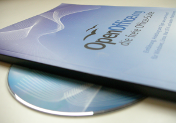
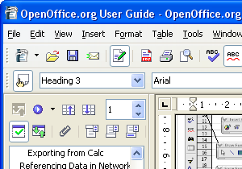
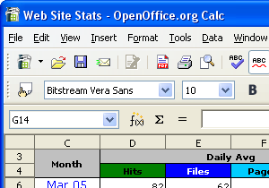
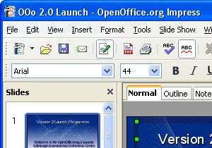
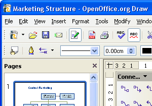
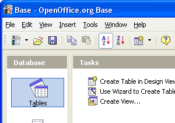

OpenOffice.org -
rumah dari aplikasi perkantoran open-source berskala dunia
Kenapa OpenOffice.org

 Dapatkan OpenOffice.org 3 sekarang
Dapatkan OpenOffice.org 3 sekarang
Perangkat Lunak Hebat
Membutuhkan orang orang hebat.
OpenOffice.org 3 adalah hasil dari pengembangan perangkat lunak selama lebih dari dua puluh tahun yang berkelanjutan. Didesain dari awal sebagai sebuah kesatuan perangkat lunak, aplikasi ini memiliki konsistensi yang tidak dapat ditandingi oleh produk lain. Model pengembangan open-sourcenya berarti tidak ada kerahasiaan.
Mainkan mouse Anda pada gambar-gambar screenshot untuk detail dari setiap komponen utama (membutuhkan javascript).
Mainkan mouse Anda pada gambar-gambar screenshot untuk detail dari setiap komponen utama (membutuhkan javascript).

Dapatkan OpenOffice.org 3 sekarang
Writer
memiliki apa yang Anda inginkan dari sebuah pengolah kata atau publikasi desktop yang modern dan penuh dengan fitur: fitur-fitur berguna seperti AutoCorrect, AutoComplete, AutoFormat, Styles dan Pemformatan, Text Frames dan Link, Daftar Isi, Pengindeksan, Referensi Bibliografi, Ilustrasi, Tabel, dan obyek-obyek lainnya.
Writer cukup sederhana untuk sebuah memo yang singkat, handal dan stabil untuk membuat buku dengan banyak grafis, heading, dan sebagainya.
Writer cukup sederhana untuk sebuah memo yang singkat, handal dan stabil untuk membuat buku dengan banyak grafis, heading, dan sebagainya.

Dapatkan OpenOffice.org 3 sekarang
Calc
adalah spreadsheet yang Anda impikan. Pendatang baru mendapatinya sangat intuitif dan mudah untuk dipelajari; Penambang data professional dan pengolah angka akan menghargai jangkauan komprehensif dari fitur-fitur yang berguna termasuk teknologi Advanced DataPilot, formula dengan bahasa natural, Tombol Sum yang cerdas, sekumpulan fungsi spreadsheet tingkat tinggi yang komprehensif, Styles dan Pemformatan, dan sebuah Manajer Skenario untuk "what ifs".

Dapatkan OpenOffice.org 3 sekarang
Impress
adalah perangkat pembuatan presentasi multimedia yang efektif. Presentasi Anda akan terdiri dari clip art 2D dan 3D, fontwork, efek khusus, animasi, dan perangkat penggambar yang handal. Sebuah multi-pane view meletakkan semua perangkat pada jari Anda dan Anda bisa 'memparkirkan' perangkat gambar yang paling sering Anda gunakan disekeliling layar dan siap untuk diakses dengan satu klik. Berbagi pekerjaan Anda dengan banyak cara: tidak hanya pdf, tetapi juga html dan Flash.
Sebarkan pesan Anda dengan Impress.
Sebarkan pesan Anda dengan Impress.

Dapatkan OpenOffice.org 3 sekarang
Draw
Segalanya dari sketsa singkat hingga rencana yang kompleks. Draw menyediakan perangkat untuk berkomunikasi dengan grafis dan diagram. Memanipulasi obyek, merotasi dalam dua atau tiga dimensi; menggunakan metode rendering yang terkini untuk membuat citra yang realistis. Smart connectors mempersingkat pembuatan flowchart, bagan organisasi, diagram jaringan, dll. Styles - fitur umum OpenOffice.org - membantu Anda mengontrol pekerjaan Anda agar menjadi lebih mudah dan jelas pada Draw.
Sebuah gambar Draw bernilai ribuan kata!
Sebuah gambar Draw bernilai ribuan kata!

Dapatkan OpenOffice.org 3 sekarang
Base
mengijinkan Anda memanipulasi basis data didalam OpenOffice.org 3. Membuat dan memodifikasi tabel, form, query, dan laporan (report), entah menggunakan basis data Anda sendiri atau mesin basis data built-in Base. Base menawarkan sebuah pilihan menggunakan Wizards, Design Views, atau SQL Views untuk pengguna pemula, menengah, dan mahir.
Akses basis data Anda secara mudah dengan Base.
Akses basis data Anda secara mudah dengan Base.


{kind=link}
Lebih Baik Dari Sisi Desain
Dikembangan selama lebih dari dua puluh tahun, OpenOffice.org adalah produk yang matang dan dapat dipercaya. OpenOffice.org didesain dari awal sebagai sebuah kesatuan perangkat lunak - bukan berasal dari gabungan beberapa paket perangkat lunak. Hal ini membuatnya sangat konsisten dan mudah untuk digunakan - yang Anda pelajari pada satu aplikasi dapat digunakan pada aplikasi lain. Bantuan yang sensitif terhadap konteks bekerja pada seluruh aplikasi, menyediakan bantuan yang tepat yang Anda perlukan. Anda bahkan bisa membuka sembarang dokumen dari sembarang aplikasi - OpenOffice.org 3 adalah satu perangkat lunak. OpenOffice.org 3 juga berjalan pada semua platform komputasi utama - Microsoft Windows, GNU/Linux, Sun Solaris, Apple Mac - tidakkah itu hebat!
Lebih Baik Untuk Anda
OpenOffice.org 3 berisi semua perangkat lunak perkantoran yang Anda perlukan, dalam sebuah paket tunggal. Anda tidak perlu khawatir versi apa yang harus diinstal: satu program installasi akan menyediakan semuanya. Instalasi juga menyertakan fitur-fitur yang tidak dimiliki oleh rival-rival lain yang mahal - sebagai contoh, kemampuan untuk membuat berkas .pdf ketika Anda ingin menjamin bahwa penerima melihat apa yang tampak pada komputernya. Juga terdapat beberapa ekstensi yang terus berkembang: fitur tambahan yang dapat disediakan oleh sembarang pengembang. OpenOffice.org merilis rilis perangkat lunak beberapa kali dalam setahun sehingga Anda bisa mengambil keuntungan dari fitur-fitur baru secepatnya.
Perangkat Lunak yang Jujur
OpenOffice.org 3 dikembangkan menggunakan perangkat lunak-terbuka, menggunakan pendekatan "tanpa rahasia". Setiap orang dapat melihat isi dari program dan menyarankan pengembangan atau memperbaiki kesalahan. Setiap orang dapat melaporkan masalah atau meminta penambahan fitur, dan seseorang dapat melihat respon dari pengguna lain atau pengembang. Status dari rilis aktual dan yang akan datang juga ditampilkan dalam wiki yang bersifat publik, sehingga Anda dapat memutuskan kapan Anda hendak melakukan upgrade untuk mendapatkan keuntungan dari fitur baru. Setiap orang yang menggunakan perangkat lunak komersial dan yang setara akan mendapati OpenOffice.org 3 berbeda. Nikmati dari keunggulan open-source!
Oracle dan Java adalah merek dagang dari Oracle dan/atau affiliasinya. Nama lainnya mungkin merek dagang dari pemilik masing-masing.